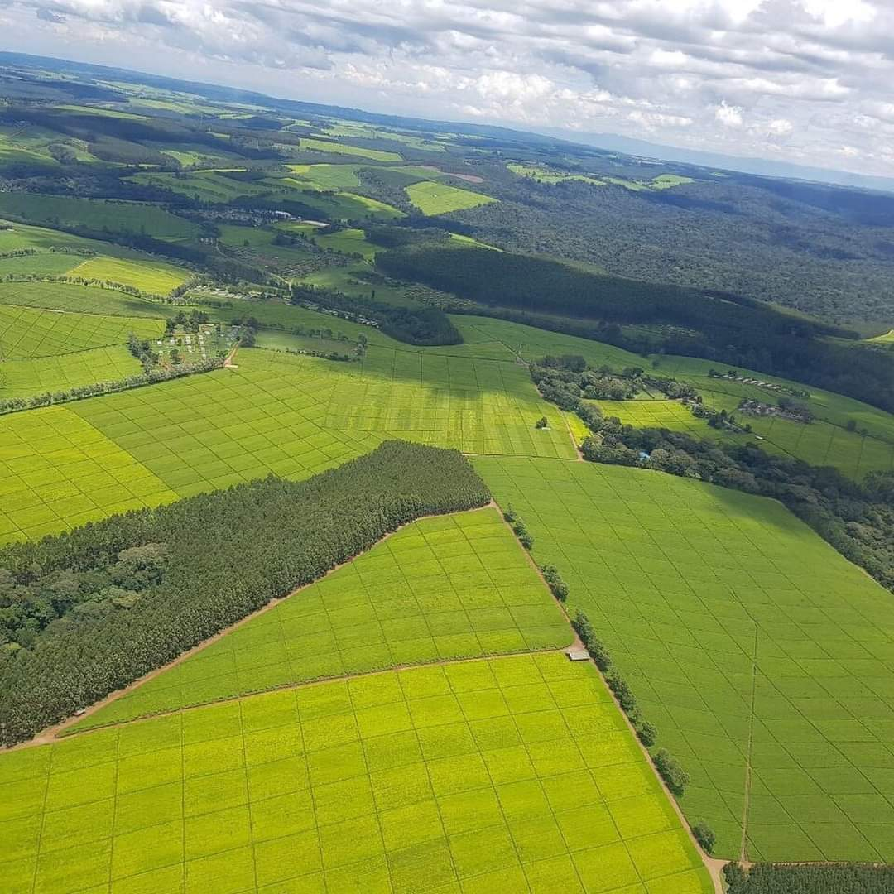

Maner tea factory limited is a factory incorporated in kenya with the objective of conducting agribussiness in tea sector. In its maiden flagship project, the company has established Maner Factory in Chemaner, Bomet county to process orthodox speciality and CTC Teas. The quality of our teas emanates from stringent plucking standards that ensures that only the best tender tea leaves are plucked for processing.
Established in 2020 and located at an altitude of 2,100 meters above sea level,the cold climate and volcanic soil is favourable for growing and accounts for the excellent quality and unique character in the Maner Tea Cup. The factory is eqquiped in most modern and latest technology in tea processing machinery for black CTC teas.
ADDRESS
Vinodeep towers,Baricho road
Nairobi kenya
Email:contact@greenfieldstea.co.ke
Phone no:0726873736
Copyright © Greenfield Tea Factory Ltd